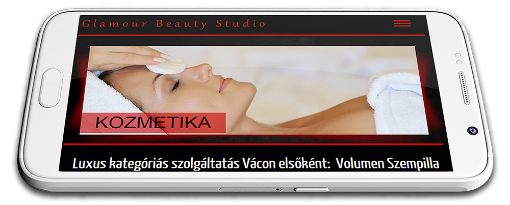
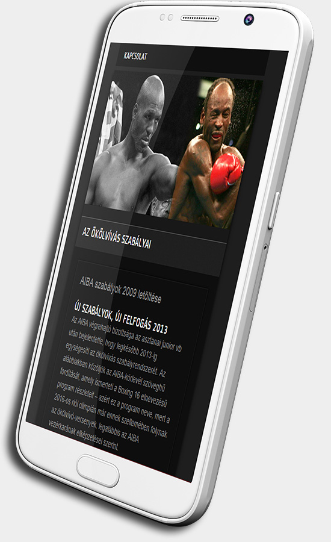

Bárhol Bármikor
A megjelenés tökéletes
 Mára többen és több weblapot néznek meg mobilról és tabletről mint más készülékről. A korszakalkotó responsive technológiát alkalmazva Weboldala ugyan olyan tökéletesen jelenik meg ezeken a készülékeken mint ha FullHD vagy 4K felbontású asztali gépről nézné.
2x
gyorsabb
40%
tömörség
3s
betöltési idő

Gyors
Hisz így terveztük
Amikor weboldalán dolgozunk, céljaink bizonyos értelemben ellentmondások: egyrészt roppant gyorsasággal szeretnénk felruházni, másrészt művészi megjelenést szeretnénk kialakítani, hogy megragadja ügyfeleit. Ha 3 secundumnál több idő kell oldala betöltéséhez a látogatók 25%-át azonnal elveszti. Ezt nem engedhetjük meg.
A mi ajánlatunk
2x
gyorsabb
40%
tömörség
3s
betöltési idő
SEO
Nem bújocskázni akarunk
Bár a Google oldalak milliárdjait térképezi fel, a felhasználók csupán csak a második oldalig lapoznak. Éppen ezért a fejlesztés közbe arra is törekszünk, hogy Google-barát webhelyet hozzunk létre. Biztosítva ezzel Önnek, hogy jövendőbeli ügyfelei megtalálják.